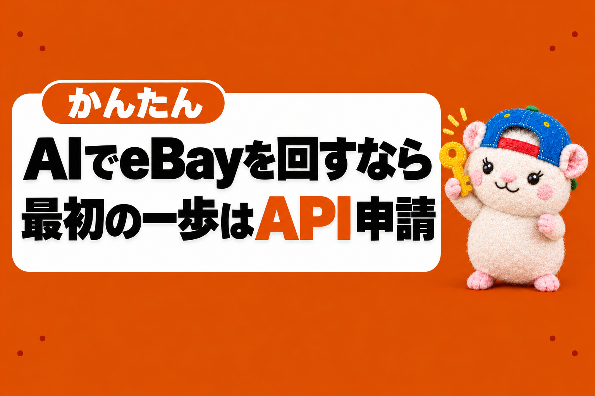

AIでeBayを回すなら、最初の一歩はAPIの申請です。
ぼくの店は、9月の作業が月45分でした。
それで月15.9万円の利益が出ています。
梱包と発送のほかは、ほぼAIとプログラムが回しています。
そのぜんぶが、APIの申請から始まりました。
「API」「申請」と聞くと、むずかしそうですよね。
でも、やることはフォームを入れて、待つだけです。
うちは朝に申し込んで、その日の夕方に通りました。
この記事では、申請の5ステップと、落ちたときに見直す3つを書きます。
なぜAPIが大事なのか
AIにeBayの仕事をしてもらう道は、2つあるように見えます。
- AIにブラウザでeBayの画面を開かせる
- API(eBayが用意した、プログラム用の入口)でつなぐ
1つ目は、使えません。
eBay Japanに書面で問い合わせたところ、AIがブラウザでeBayを自動で見るのは許可されない、という答えでした。
許可を申請する窓口もありませんでした。
なので、正面の入口はAPIだけです。
うちの店では、受注・在庫・出品・値段・朝の報告、この5本のプログラムがぜんぶAPIでつないでいます。
APIがなければ、どれも動きません。
APIは、AI社員がお店に入るための入館証です。
申請は5ステップ
ここからが本題です。
むずかしい作業はありません。
① eBay Developers Programで登録フォームを入れる
「開発者」と書いてありますが、プログラマー専用ではありません。
自分の店の道具を作るために、だれでも申し込めます。
登録は無料です。
フォームでは、メールアドレス(確認のため2回)や、開発者用のユーザー名・パスワードなどを入れます。
ひとつだけ大事なことがあります。
eBayの公式ページには、「仕事用のメールアドレスで登録してください」と書いてあります。
ぼくは個人のGmailで申し込んで、そのまま通りました。
でも、これから申し込むなら、仕事用のメールがあればそちらが安心です。
② 規約に同意してJoinを押し、届いたメールのボタンを押す
API利用の規約(API License Agreement)を読んで同意します。
ロボットではない確認をして、Joinを押します。
すぐに、登録したアドレスへ確認のメールが届きます。
件名は「Verify your email address with eBay Developers Program」。
青い「Click to Confirm Email」のボタンを押せば、申請は終わりです。
出典: eBay Developers Programから届いた確認メール(Gmailの画面・2026年6月26日 9:24)。メールアドレス・名前・確認用のリンクは伏せています
このリンクは24時間で切れます。
押すまでは、開発者のアカウントに入れません。
迷惑メールに入っていないかも見てください。
③ 承認を待つ
公式の目安は約1営業日です。
うちは6月26日の朝9時ごろに申し込んで、夕方6時ごろに「Welcome」のメールが届きました。
待ったのは、約9時間です。
出典: eBay Developers Programから届いたメール(Gmailの画面・2026年6月26日 18:23)。名前は伏せています
「Your eBay developer account has been created!」と書いてあれば、承認です。
④ キーを作る
developer.ebay.com にログインします。
ここで使うのは、①で決めた開発者用のユーザー名とパスワードです。
いつものeBayのログインとは別ものなので、注意してください。
ログインしたら、右上の自分の名前から「Application Keys」を開きます。
アプリの名前(なんでもOK。うちは会社名)を入れて、Production(本番)の側で「Create a keyset」を押します。
出典: eBay公式ガイドの画面例(2026年9月29日確認)。画像は練習用(Sandbox)の側です。自分の店につなぐときはProduction(本番)の側を使います
キー(App ID・Dev ID・Cert ID)という3つの合言葉がもらえます。
⑤ アカウント削除の通知を設定して、店とつなぐ
キーを作ると、こんなメールが届きます。
出典: eBay Developers Programから届いたメール(Gmailの画面・2026年6月27日 6:26)。名前・アプリの名前・App IDは伏せています
「keyset is currently disabled」は、キーはできたけど、まだ使えないという意味です。
使えるようにするには、どちらかを選びます。
- 通知を受け取る: お客さんが「自分のデータを消して」と頼んだときの知らせを受け取る窓口を作る。注文の記録などでお客さんの情報を保存するなら、こちら
- 免除を申請する: eBayのデータを保存しない人は、「受け取らなくていい」と申請する
AIで注文を台帳に記録するなら、多くの店は「受け取る」側です。
最後に、いつものeBayアカウントでログインして、「このアプリが店を操作していい」と許可を出します。
ここまでで、APIがつながります。
④と⑤は、AIに画面の文言を伝えて、一緒に進めればOKです。
ただし、Cert IDとトークンはパスワードと同じです。
チャットには貼らないでください。
登録だけで、どこまで使える?
登録が通れば、店の仕事はほぼそのままAPIで動かせます。
- 出品・在庫・値段の書きかえ
- 注文の取得と、発送済みにする
- 入金と手数料
- 広告・分析・店の設定(ビジネスポリシー)
- いま出品されている商品の相場を探す(1日5,000回まで)
ここまで、うちは追加の申請なしで使えました。
使えないのは、いくらで売れたか(売れた実績)を取るAPIだけです。
これはeBayが認めたパートナー向けで、ぼくは2回申請して、2回とも通りませんでした。
なので、リサーチも「出品中の相場」まではAPIでできます。
落ちたときに見直す3つ
先日、「開発者アカウントの申請が却下されてしまった」という相談をもらいました。
調べてみると、最近「自動で却下された」という声が、eBayのコミュニティにたくさんあります。
届くのは「入力したデータに問題があるか、不審な点があった」という決まった文面だけ。
理由は教えてもらえません。
でも、打てる手はあります。
① メールアドレスを仕事用に変える
公式が「仕事用のメールで」と書いているところです。
無料メールで3回落ちて、独自ドメインのメールに変えたら通った、という例もあります。
ぼくはGmailで通ったので、Gmailだから落ちる、とは言い切れません。
でも、落ちたときに最初に変えられるところです。
② 名前と住所を、販売アカウントとそろえる
開発者の登録と、いつものeBayアカウントで、名前・住所の書き方を同じにします。
VPN(通信の経路を変えるサービス)を使っているなら、切ってから申請します。
③ サポートに見直しを頼む
eBay Developersのサポートの「Contact Us」から、「My account registration was rejected」を選んで送ります。
「自分のお店の管理に使う」と、用途をはっきり書くのがおすすめです。
ちなみに、さっきの「売れた実績」のAPIで断られるのは、登録の却下とは別の話です。
登録が通っていても、あのAPIだけは別に審査があります。
まとめ: 申請して、待って、つなぐ
AIでeBayを回すときの流れは、この3つです。
- 申請する: フォームを入れて、規約に同意(仕事用のメールがあればそちらで)
- 待つ: 公式の目安は約1営業日(うちは約9時間)
- つなぐ: キーを作って、削除の通知を設定して、店に許可を出す
落ちたら、メール・名前と住所・サポート、の3つを見直します。
ぼくの店は、AIでeBayの画面を開かず、公式のAPIでつなぐ形で回しています。
eBay Japanに問い合わせて、書面で回答をもらった範囲です。
ただ、AIをどこまで使うかは、eBayの規約を確かめたうえで、自己責任でお願いします。
申請は、待ち時間のほうが長いです。
今日フォームを出しておけば、あしたにはキーが作れるかもしれません🐹
APIでなにを任せるかは、この記事に書きました。

▼中の人🏠(レンタルスペース23部屋・売上1.5億)のレンスペ実録

▼ブログ(eBay×レンスペ、全記事まとめ)

▼この店のやり方は、ぜんぶ1冊にまとめてあります
リサーチ・出品・値付け・顧客対応まで、初月利益10万4,286円を出した実店舗の記録と手順を全部書いた教科書です。
読んだその日から、AI社員の作り方をそのまま真似できます。
『AI × eBay輸出の教科書 — 梱包以外、ぜんぶAI』


🎁 2026年10月22日に第3版になりました。顧客対応 完全自動化ツール・ストアドクター・AI自動化コーチなど付録6つは、これまでに買った人も含めて購入者全員に無料で受け取れます。
内容・最新価格は販売ページをご確認ください。